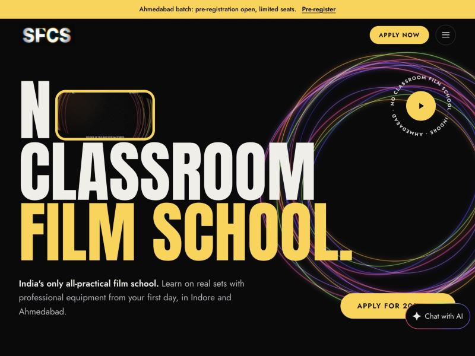
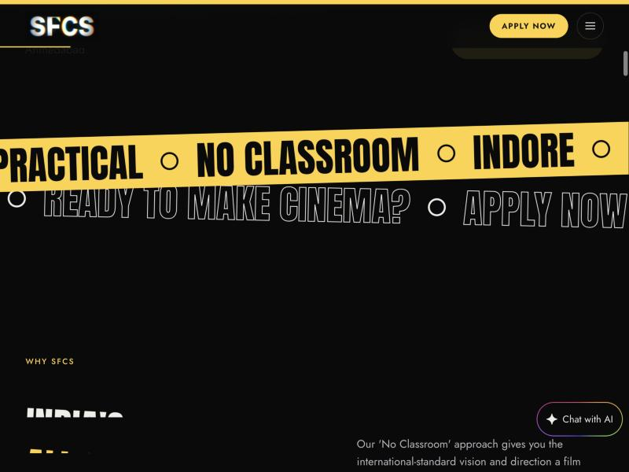
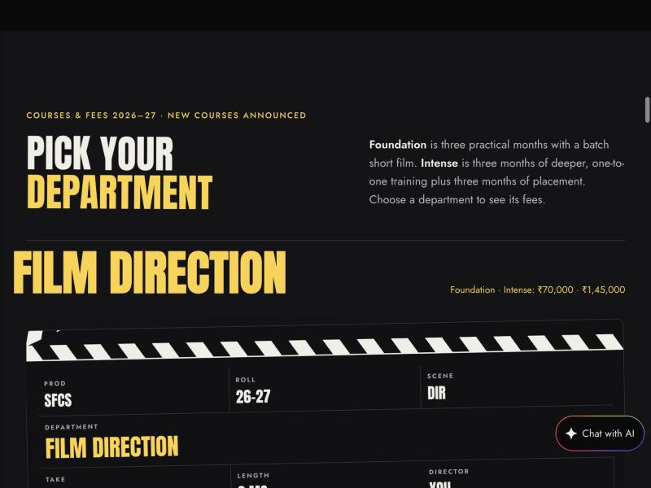
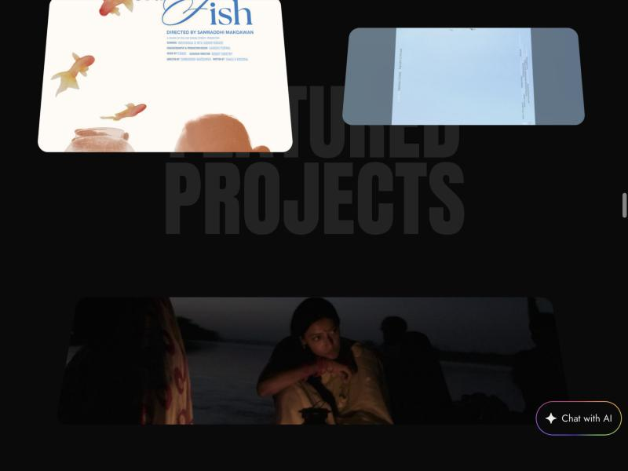
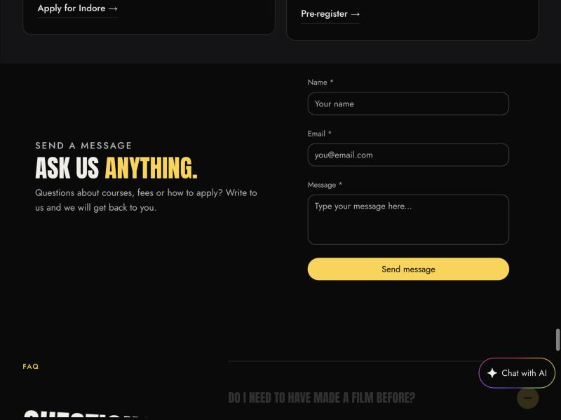

School of Film and Cinema Studies — India's only all-practical, "no classroom" film school, with campuses in Indore and Ahmedabad. I designed and built the website end to end, and I'm currently running its digital marketing — ads, content and admissions inbound.

Design and build the public website for SFCS end to end — a marketing and admissions site covering eight course departments and their fees, a student-projects showcase with real festival credits, a running script grant programme, two campuses, and a full apply/admissions flow, plus a contact form and FAQ.
A note on context: this is real, live client work — the site is in production at schooloffilm.in, and past the build, I'm the one currently running its digital marketing: paid and organic admissions campaigns, content, and the inbound funnel the site itself feeds.
My role spanned design and build: UX — the admissions funnel, the course/fee structure, and the student-work showcase; UI — every screen and interaction; and the build — shipping it as a live, production website rather than handing off a file.
Film-school websites tend to read like any other college's — a logo, a navy palette, a wall of course names. That's a mismatch for a school whose entire pitch is "no classroom, real sets, professional equipment from day one." A prospective student deciding between SFCS and a conventional film school needed to feel the difference in the first few seconds, not read it in a paragraph three scrolls down.
Goal: make the site feel like a film set, not a classroom — while still doing the unglamorous job well: clear fees per department, a legible apply flow, and real proof (festival credits, finished films) that students actually make things here.

Instead of a conventional "Programs" page, I looked at what a film set actually hands you — a slate, a schedule, a call sheet — and used those as the literal UI metaphor for admissions content that's normally dry.
Courses live on a clapperboard — picking a department fills out a real film slate (production, roll, scene, department, take, length, director) with that department's own fee and structure, instead of a generic accordion. Proof over promises — the site leads with real finished student films and their actual festival selections (Cannes Directors' Fortnight, IFFI, London Short Film Festival) rather than marketing copy about "world-class training." Admissions open to anyone — the apply flow explicitly welcomes applicants with no filmmaking background, since that's most of who should be applying.
The course picker is the centrepiece: choosing Film Direction, Cinematography, Screenwriting or one of five other departments animates a real clapperboard slate into view, filled in with that department's own fee for the Foundation and Intense tracks. Featured Projects runs as a tilted poster-and-still collage per film — real posters, real stills, real director credit — backing onto a running festival list instead of a generic "our achievements" block.
Past the showcase, the site carries the operational load a school site actually needs: a two-campus admissions comparison (Indore live, Ahmedabad pre-registration), a plain three-step "how to apply" breakdown for applicants with zero film background, a running Script-to-Screen grant with its own rules and past winners, and a contact form backed by an FAQ. I also handle the site's ongoing digital marketing — the admissions campaigns that drive traffic into this exact funnel.


